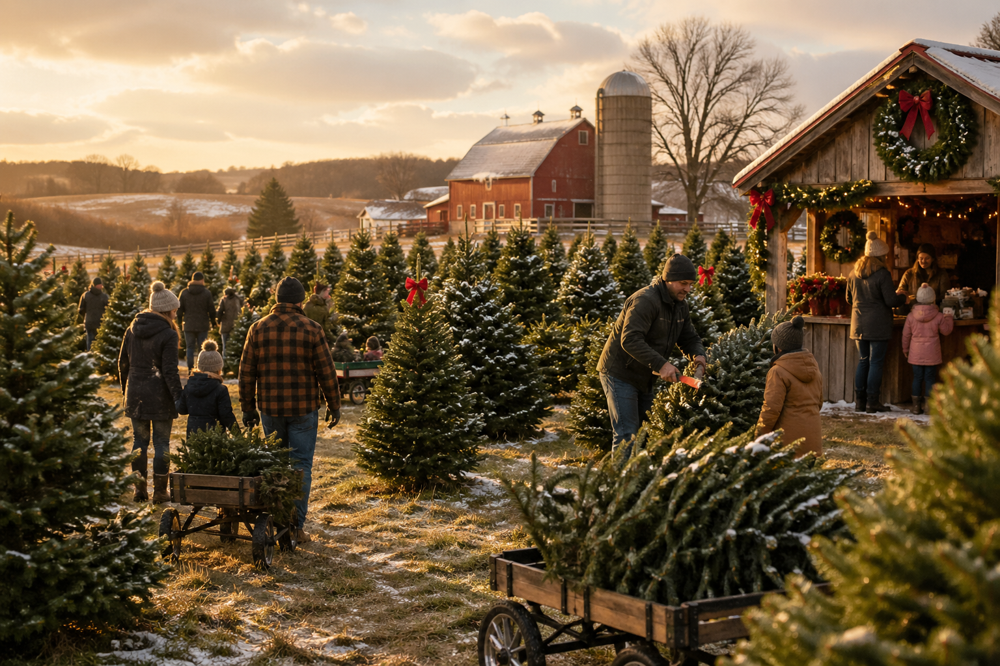
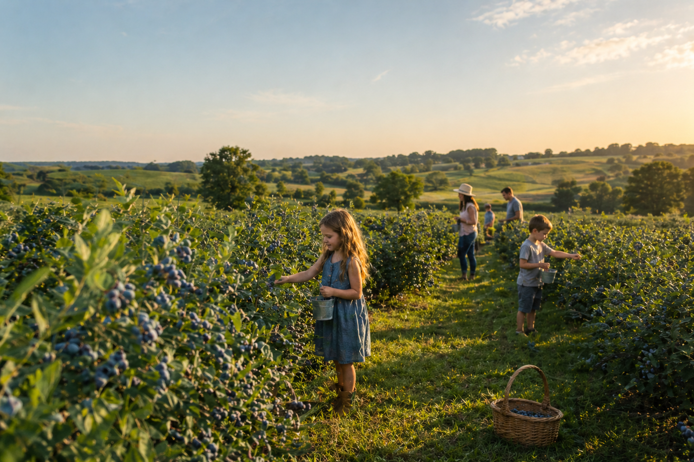

Our Story



Hollow Creek Farm has been in the Calloway family since 1962. What started as a small vegetable operation has grown into one of the region's most beloved agritourism destinations. Founder Bill and Margaret Calloway passed the farm to their daughter Dana and her husband Rob in 2008. Dana and Rob's kids, Tyler, Meg, and Sam, grew up on the farm and now help run it full time. The farm sits on 140 acres and includes working fields, a restored 1890s barn, a sunflower field, and seasonal events enjoyed by thousands each year.